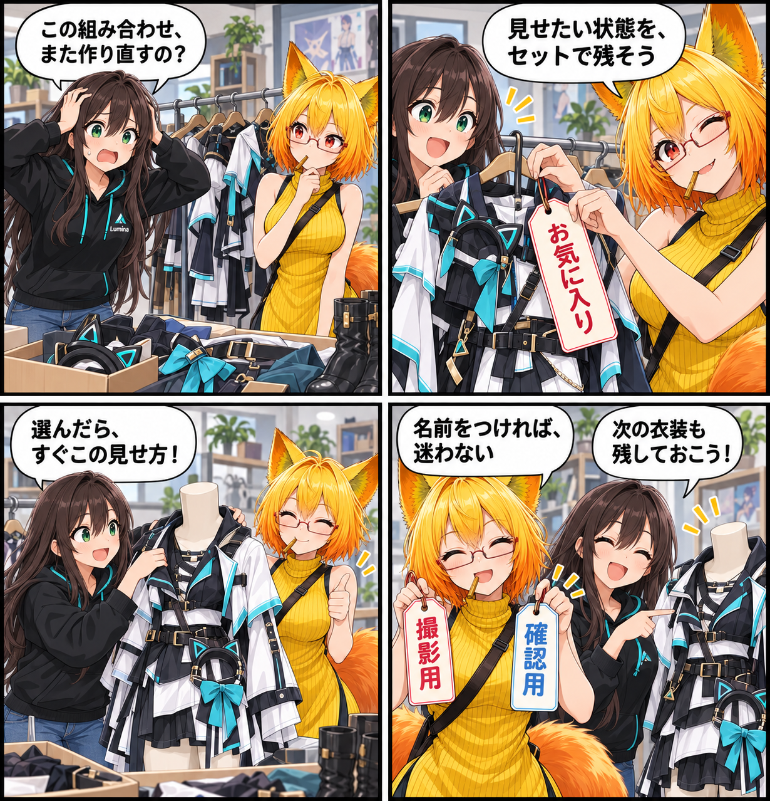

閑話休題：衣装も髪型も、見せたい組み合わせを呼び戻す
撮影用、確認用、あるいはお気に入りの見せ方。アバターのパーツ表示状態を名前付きで残しておけば、毎回の組み立て直しを減らせます。今回は、現行VRASの既存機能「パーツ表示プリセット」を紹介します。

パーツごとの表示を、ひとつの見せ方として残す
VRASのパーツ一覧では、アバターを構成するRendererごとの表示状態を切り替えられます。現在の状態を名前付きプリセットとして保存しておけば、あとから一覧で選び、その見せ方へ戻せます。
衣装やアクセサリーの確認、撮影向けの組み合わせなど、目的ごとに残しておけば、必要なパーツを毎回探して同じ切り替えを繰り返す必要がありません。
探して、まとめて、必要なところだけ切り替える
パーツ一覧には検索、一括表示、一括非表示があり、アバターの階層をたどりながら対象を探せます。複数のMaterialを使うRendererでは、Material slot単位の状態もプリセットに含めます。
「このモデルのこの見せ方」を細かく整えた状態を、ひとつの名前として持ち運ぶための仕組みです。
残したセットは、あとから育てられる
保存済みのプリセットは、名前変更、複製、お気に入り、並び替え、削除、現在の状態での上書きに対応します。削除は短時間内の再操作を求める方式なので、意図しない削除を避けるための一呼吸もあります。
アバターと内容の版に合わせたプリセット群を読み込み、今の表示状態を新しいセットとして保存したり、既存のセットを更新したりできます。
4コマの裏話
今回はアプリ画面をそのまま描かず、衣装ラックのセット札で表現しました。「お気に入り」を留めたセットを選ぶと、必要な見せ方がすぐ戻る。最後は撮影用と確認用の札を増やしたくなる、ちょっとした余韻です。
まとめ
パーツ表示プリセットは、アバターのRendererやMaterial slotの表示状態を名前付きで保存し、あとから適用できる既存機能です。用途ごとの見せ方を残しておけば、確認や撮影の準備を自分のペースで進められます。
本日のひとこと： 見せたい状態に、ちゃんと名前をつけよう。